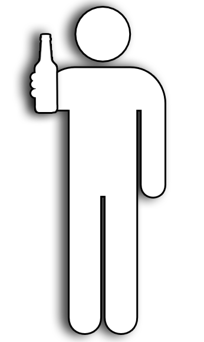

Nice job,
You
might not be wasted.
Woah!
If you can't walk then you probably shouldn't be driving.
Walkalyzer is for entertainment purposes only. If you are impaired don't drive or do anything stupid that could hurt someone else.
But if you are impared why not play with this app, it's fun!
Thanks,
.ore
